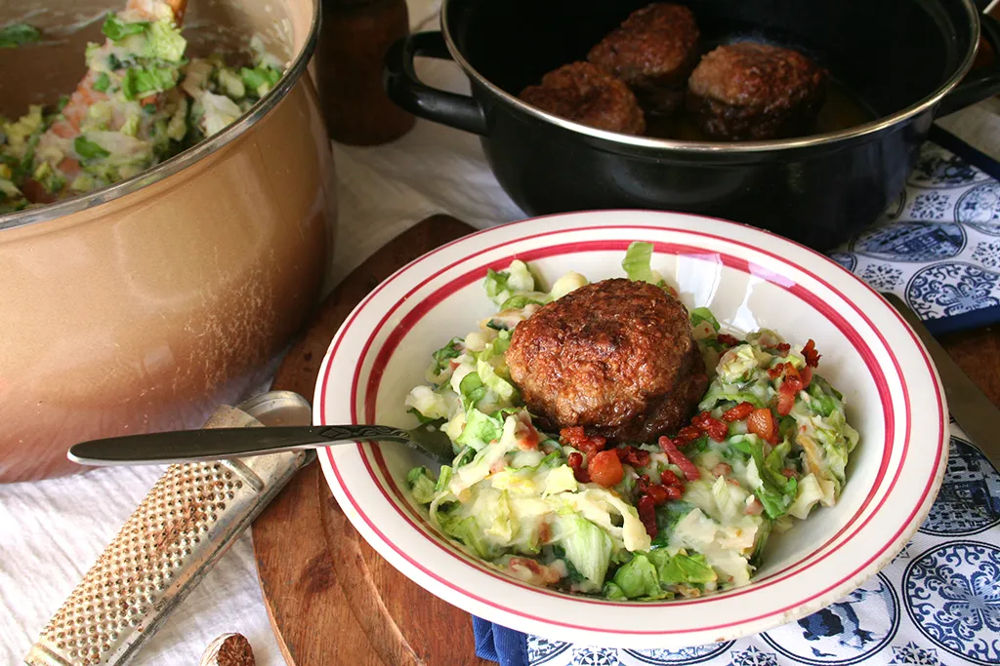

Andijviestamppot is a traditional, old-fashioned Dutch side dish consisting of mashed potatoes combined with mashed, raw endive and flavorful bits of bacon. The dish is additionally flavored with onions, vinegar, salt, and pepper, while milk is sometimes added for extra creaminess.
Meal prep time : 20 minutes
Servings : 4